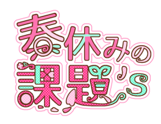
WEBSITE
MMD
ILLUST
LIVE2D
OTHER
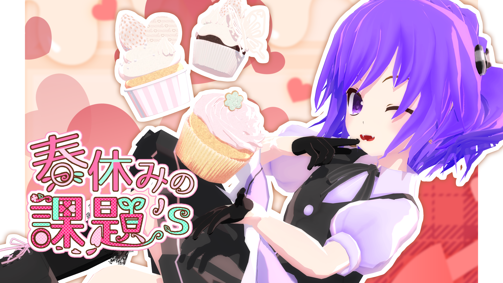
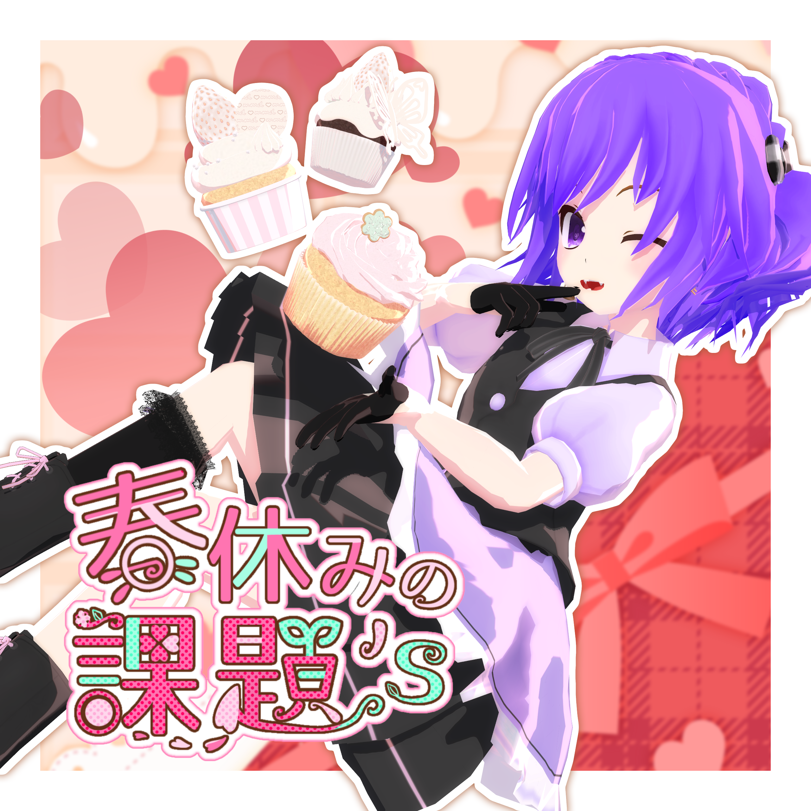
Web制作の手順
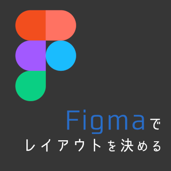
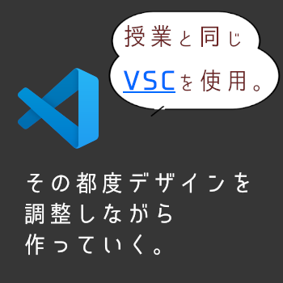
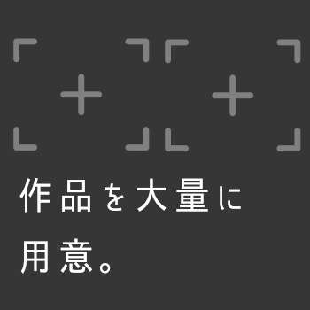
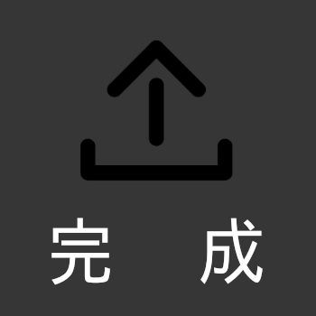
MMD
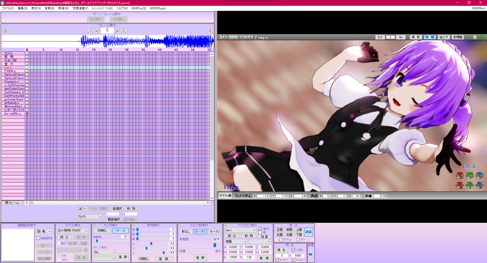
ソフトの正式名称は"MikuMikuDance"オリジナルのキャラクターモデルやアクセサリを組み込んで操作するソフトウェアです。
有志の方が作ってくれたモーションデータ、モデルデータ、エフェクトデータをうまく組み合わせて調節、改変をし、最終的にテキストアニメーションを付けて１つの動画に仕上げます。
MMD作品一覧 ＞
Illustlation
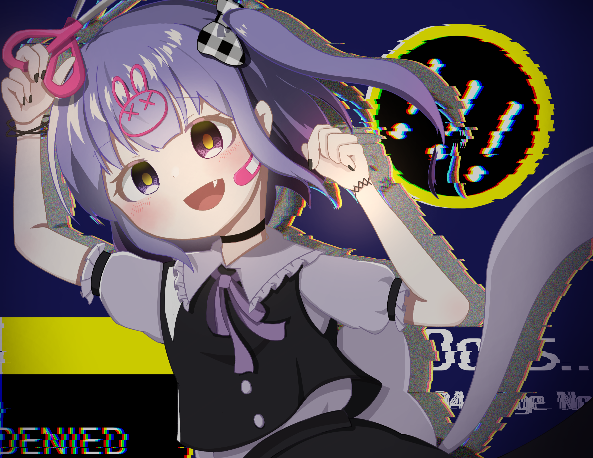
iPadで使えるお絵かきアプリ、"iBisPaint"を使って自分のオリジナルキャラクターの子をメインにイラストを描きました。
好きなイラストレーターさんの塗り方をよく見て取り入れながら自分の絵柄を大切にして描きました。
二次創作キャラクターの練習や、ラフをたくさん描いて、とにかく枚数をこなすようにしました。
イラスト作品一覧 ＞
Live2D
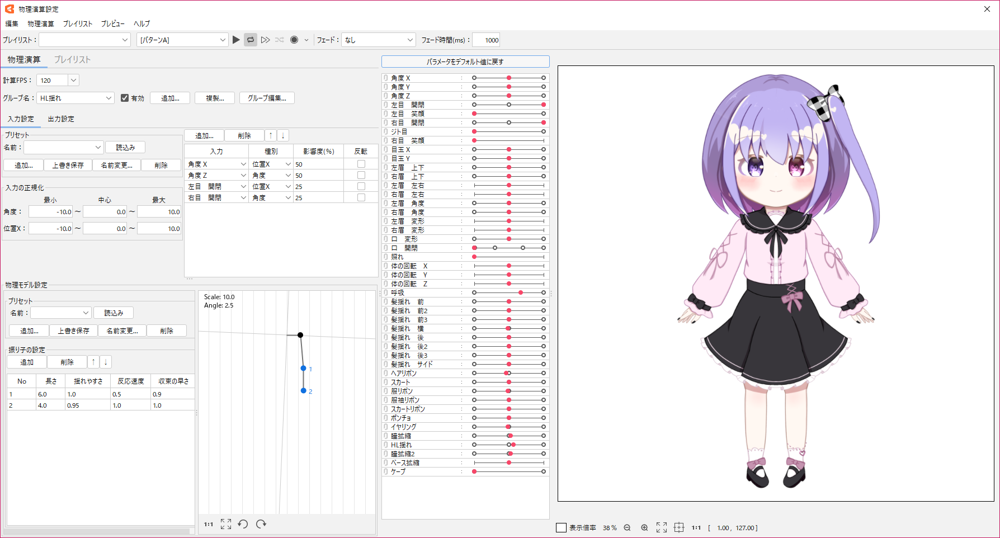
イラスト制作がすこしずつできるようになってきたのでデフォルメキャラクターをLive2Dで動かして、Vtuberになってみました。
パーツを細かく分けて、揺れ物をたくさん追加しました。
Live2Dのこだわりポイント ＞
LOGO
このサイトの文字ロゴを作ってみました。
もともとあるフォントに飾りを足したり変形を加えて、配色の意図などをしっかりと考えながらつくりました。
Other
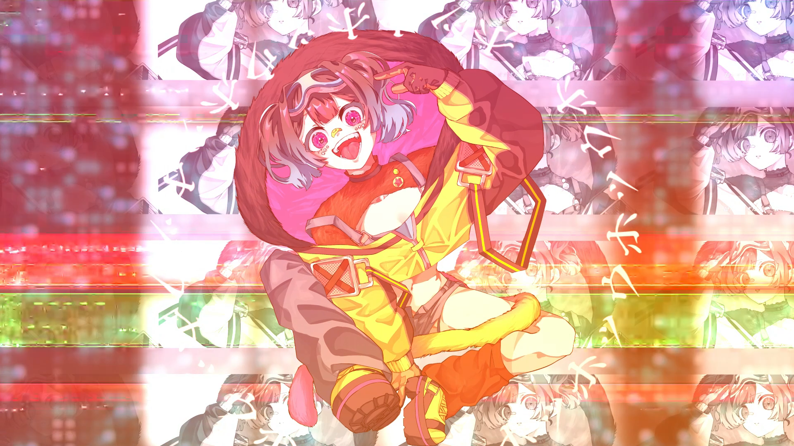
MVを担当したりしてました！
ほかにもやったことをご紹介。
ほかにやってたこと ＞
今回は春休み開始～3月31日までの間で作った作品を並べています。
23DJ050 Kakuta